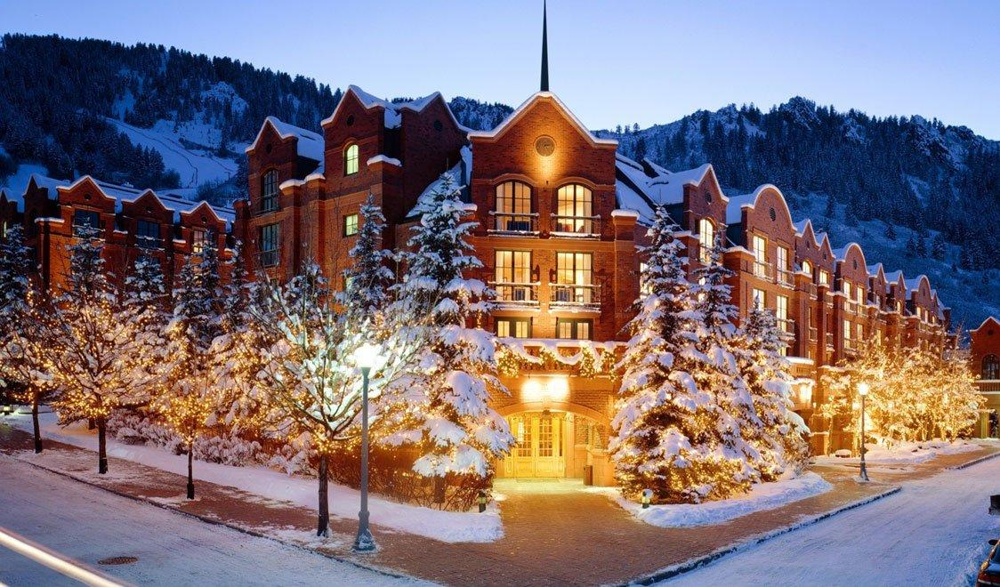
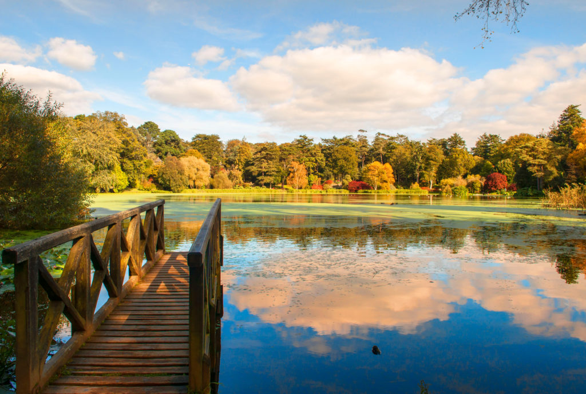

Welcome to Holiday Destinations...
We aim to highlight the top holiday destinations across the different seasons every year
Spring Holidays

Some of the top places to visit in Spring are:
- Bluebells galore, East Sussex
- Daffodil dale, North Yorkshire
- Somerset, England
Summer Holidays
Some of the top places to visit in Summer are:
- Suffolk, England
- Skomer Island, Wales
- Fowey, England
Winter Holidays
Some of the top places to visit in Winter are:
- Edingburgh, Scotland
- York, England
- Oxford, England
Autumn Holidays
Some of the top places to visit in Autumn are:
- Stourhead Gardens, Wiltshire, England
- Westonbirt, The National Arboretum, Gloucestershire, England
- Glenariff Forest, Co. Antrim, Northern Ireland